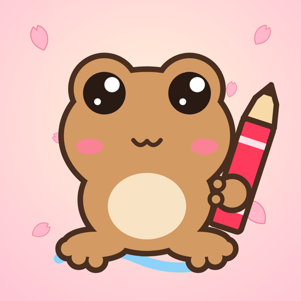
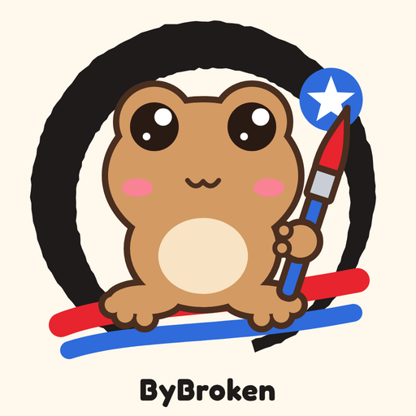
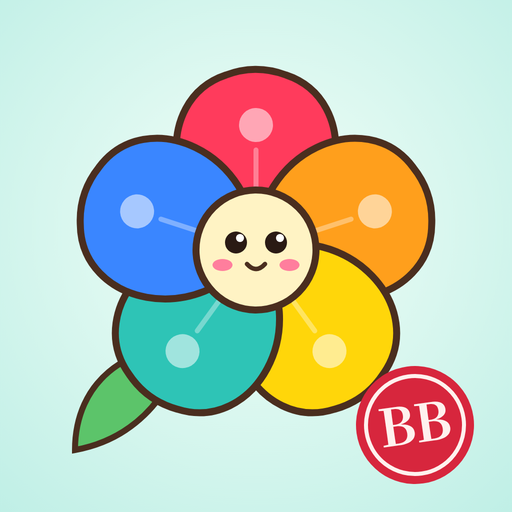
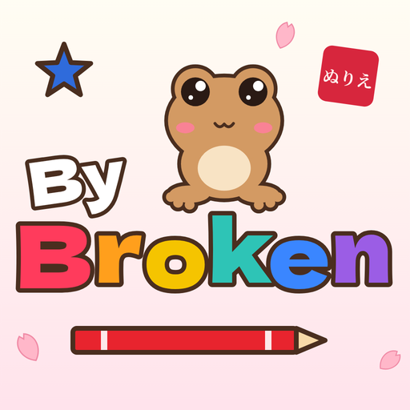

Opción 1
Coquí kawaii con crayón rojo, fondo pastel rosado con pétalos de sakura. Sin texto: se ve claro en tamaño pequeño.


Opción 2
Coquí con pincel dentro de un ensō (círculo de tinta japonés), trazos rojo y azul con la estrella de la bandera de PR y “ByBroken”.


Opción 3
Flor de maga estilo anime: cada pétalo es un color de la paleta, carita kawaii al centro y sello hanko rojo “BB”.


Opción 4
Logotipo “ByBroken” con letras de colores estilo japonés, coquí encima, crayón, estrella azul de PR y sello rojo “ぬりえ” (colorear).
